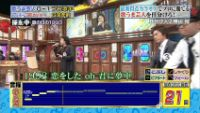
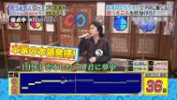
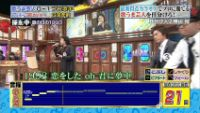
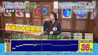
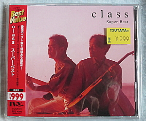
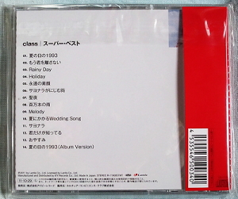
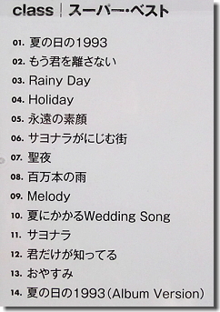

2003年
class archive ｜non-profit, silent archive
 




再び関ジャニ∞がメインMCの番組に出演決定です。わーい(∩´∀｀)∩ﾜｰｲ
既に収録済。オンエア日が不明でしたが 8月28日（火）19時～で確定です！
次回予告で日浦さんの顔にモザイクがぁああ…!!!(笑)
出演コーナー：【あの人何やっとんねん】
第1位「夏の日の１９９３」がミリオンヒットした元classの日浦孝則
1993年に「夏の日の1993」で大ヒットを記録したclassの日浦孝則さん。
ソロとして8枚目のアルバムをリリースし、全国を巡るキャンペーンツアーへ。コンピューター会社員から再デビュー、
そして今は人気ソフトの開発者としても活躍する日浦さんが、自身の音楽活動と現在の暮らしについて語っています。
「夏の日の１９９３」を歌った“ｃｌａｓｓ”の日浦孝則さんは人気ソフトを開発９３年、１７０万枚超のセールスを記録する大ヒット曲が生まれた。日浦孝則さんと津久井克行さんのデュオ“ｃｌａｓｓ”が歌った「夏の日の１９９３」だ。夏を代表する曲として今でも人気が高い。残念ながら、津久井さんは３年前に膵臓（すいぞう）がんで死去したが、日浦さんは今どうしているのか。
「昨日、ソロとして８枚目のアルバム『コーヒーがりがり』を発売しました。今年３月末、もろもろの支払いのメドがついてホッとしたとき、カミさんがちょうどコーヒー豆を挽（ひ）いていましてね。結婚して２５年、２人してコーヒーを飲める今は幸せなんだぁとつくづく思い、その気持ちをつづったタイトル曲とｃｌａｓｓ時代のヒット曲『Ｈｏｌｉｄａｙ』『聖夜』を含めた全１２曲を収録しています」
７月７日、七夕の夜、「８５年に上京して以来の付き合い」という新宿西口にある居酒屋で会った日浦さん、こういって生中のジョッキをグイッと空けた。
「当分、この店に来られません。っていうのも、明日から京都を皮切りにキャンペーンツアーで関西から九州の各地を回るんです。ワンボックスカーのトヨタクルージングハイエースにギター３本、新曲アルバムやオリジナルＣＤ、それに着替えを積んでサポートギター兼ドライバーの友人と２人で移動します。宿泊はビジネスホテル７、友人宅３の割合かな。まさにドサ回りです、ハハハ」
スケジュールは９日＝高松、１０日＝高知、１２日＝福山、１３日＝三原、１４日＝佐賀、１６日＝唐津、１７日＝長崎、１８日＝熊本、１９日＝鹿児島、２０日＝福岡、２１日＝広島、２４日＝神戸、２５日＝大阪といった具合だ。
「２９日、東京・恵比寿天窓Ｓｗｉｔｃｈでのライブがファイナルになります。総移動距離は約３０００キロ。５２歳のオヤジに暑い盛りの旅はきついだろうけど、ガンバるしかないですね」 さて、立命館大学理工学部電気工学科出身の日浦さんは、ミュージシャン目指して２５歳で上京。２７歳のとき、テイチクから歌手デビューするも、パッとせず、８９年、コンピューター会社に就職。ソフト制作に携わりつつ、再起を目指した。そして９２年秋、音楽事務所主導で津久井克行さんとｃｌａｓｓを結成。翌年に出した「夏の日の１９９３」がいきなり１７０万枚を超えるミリオンセラーになり、続く「もう君を離さない」もヒット。２人は“日本のサイモン＆ガーファンクル”と呼ばれ、歌番組の常連となった。
ガッポリ？ とんでもない。最初は月給制で、９３年の年収はたったの２８０万円でした。コンピューター会社時代は残業代を含めると１０００万円はあったし、減収も減収、大赤字です。当時、すでに結婚して子供もいて、貯金を取り崩しながら生活してました。結局、９６年の解散まで年収は３ケタのままでしたよ」 解散後はソロ活動を。作曲家としてＶシネマ「餌食」の音楽を担当したり、横浜ベイスターズの応援歌「勝利の輝き」を作ったりした。
「それでメシが食えるかって聞かれれば、当然、食えません、ハハハ。実は個人的にコンピューターソフト開発を手がけていて、ボクが開発した建築家向けのオートＣＡＤセルフラーニングソフトがロングセラー商品になってる。それがあるからこそ、年１回のアルバム制作と１カ月弱のツアーが可能なんです」 夫人、１男２女と都内に暮らす。
日浦さんからのお知らせです＼(^o^)／
みなさんこんにちは！日浦です。
今年の夏も、日浦孝則ライブツアー2012！ということで15公演を行います！
お陰様で、毎年アルバムを制作し、夏のツアーという展開は今年で4年目！今回は鹿児島まで行きま～す！
そして、今年のアルバムは、弦楽カルテットとのコラボレーション！という異例の作品です！
アルバムとライブツアー、タイトルは「コーヒーがりがり」です。
是非楽しんで頂きたいと思います！！
●ツアースケジュールです。（ツアーの詳細はこちら）
- 7.08（日） 京都／Modern Times 19:30～
- 7.09（月） 高松／ミュージック・イン・グランドファーザーズ 19:30～
- 7.10（火） 高知／ファンシー・ラボ エルレロ＆リング 19:30～
- 7.12（木） 広島・福山／tree cafe unplugged MUSINA 19:00～
- 7.13（金） 広島・三原／cofee&Live はるのんカフェ 19:30～
- 7.14（土） 佐賀／LIVE HOUSE GEILS 19:30～
- 7.16（月） 佐賀・唐津／RIKI HOUSE 20:00～
- 7.17（火） 長崎／田園 20:00～
- 7.18（水） 熊本／CIBレストラン＆BAR 19:00～
- 7.19（木） 鹿児島／YES. 19:30～
- 7.20（金） 福岡／ちょっとバー木馬 19:00～
- 7.21（土） 広島・五日市／モーターブレス 19:00～
- 7.24（火） 神戸／メイデン・ヴォエッジ 18:30～
- 7.25（水） 大阪／ラピーヌ Diner & Cafe 19:30～
- 7.29（日） 東京・恵比寿／天窓Switch 13:00～（ツアー・ファイナル、バンドライブ）
是非、お近くの会場で、今年の僕の新曲を聴きに来て下さいね！
ネットで予約して前売り料金でお得に参加下さい！
●ライブ前売り予約のＵＲＬは、
http://1993.jp/adv_ticket/appli/
決定！！ 日浦孝則＆渚カルテット 弦楽クリスマスライブ！
12.20（木） 東京・恵比寿／天窓Switch 19:00～ （ネット予約可）
今年のニューアルバム「コーヒーがりがり」は、”渚カルテット”という弦楽四重奏と僕とのコラボ作品です。
ドラムもベースもシンセも居ない、弦楽器と声だけのとてもアコースティックなニューアルバムです。
昨年末に、 ”渚カルテット” とのライブが実現しましたが、その時の音の体験が気持ちよく素晴らしかったので、
その想いから弦楽アルバムの制作となりました。
「この曲、弦で聞いたら気持ちいいだろうなあ～！？」って曲が沢山入っています。
そして、毎年、僕の新しく書き下ろす新曲は、とてもリアルな歌詞が増えてきました。
今回は、瀬戸内海のふるさとに思いを馳せながら歌った『ふるさと』
娘が就職し、一人暮らしを始めたことへの想いを歌った『Young Bird』
信号待ちをしているときに後ろを通り過ぎていった車いすを歩行器代わりにしたお婆ちゃん、
その姿を見ていて、今現在の日常への愛おしさを表現した『コーヒーがりがり』など。
特に、同世代には共感して頂けると思う曲が入っています！
既に全国のCDショップ、AMAZON等でも予約受付を開始しています。 よろしくお願いします！
ＨＰでもレコーディングの様子や、もうすぐセルフライナーノーツもアップしようと思いますので、 チェックして下さいね！
是非、今年も新作をお楽しみ下さい！！
テレビ朝日「関ジャニの仕分け∞」に出演するぞー！
オンエア日は2012年5月19日（土）19：54～20：54です。
出演コーナーは「カラオケ得点で歌手に勝てそうな歌うま芸人を仕分けろ対決」です。
対戦相手は以前モノマネ番組でclassモノマネした「ダブルネーム」！！
ダブルネーム2人に対し、日浦さんソロで挑みます！どちらに高得点がつくのか？
そういえばclass時代にラジオで津久井さん、日浦さんとも「カラオケ苦手」って言ってたな～
iTunes Music Storeからclassの楽曲すべてが消えている…( ﾟдﾟ )
調べると先月から一部レーベルがiTMsからの撤退が発表されているとの事です。
では現在、class楽曲の原盤権利はどこが持ってるのか？
当時の発売元：（株）アポロンでしたが、バンダイ・ミュージックエンタテインメントへ社名変更 → 2000年同社解散 → ランティスへ移譲
※TSUTAYAから発売された「スーパーベスト」にランティスがクレジットされています。
「iTunes Plus」 へ順次対応で一時的に消えてるだけだといいのですが…。早期に復活を望む！！！
因みに「夏の日の1993- Sea Side ver.-」と日浦孝則ソロ楽曲と岡崎氏が歌った方の楽曲は確認できました。
私は本物のclassが聞きたいのっ！！
「退屈」を再発してくれ！！！
【追記】2012年6月1日現在、復活しています！
テレビCMを見て発売を知る→早速、TSUTAYAに走る→購入
買っちゃった(｀・ω・´) 全曲持ってるんだけどね(笑)

裏ジャケットはこんなのです。
収録曲詳細
